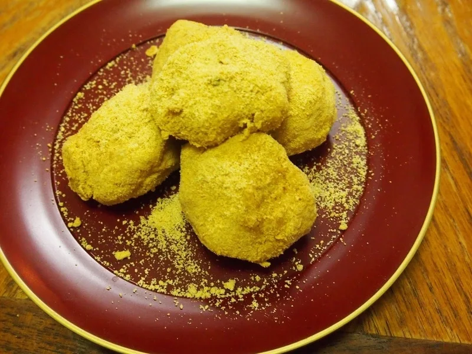
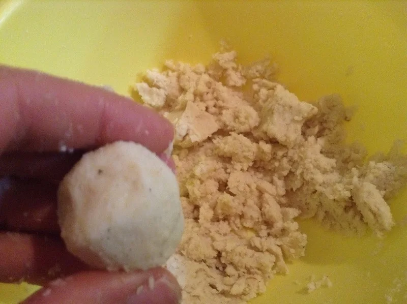

パンケーキ・おやつ
おからパウダーのミニパンケーキ
小さく焼いて楽しむ、おからパウダーのミニパンケーキです。私はこの生地を、ジャムやバターと合わせたり、あんこを挟んだりする食べ方も紹介してきま


元の配合は、おからパウダー1、片栗粉2、水5が目安です。水の加減はおからパウダーによって変わるので、まとまりを見ながら加えましょう。
最初から大量に作るのが心配なら、少量で試します。手元のおからパウダーでまとまり方を確かめてから、量を増やしましょう。
元記事では、水分が少ない時や片栗粉を減らした時に、ゆでている途中で団子が散りやすくなったとしています。まずは記載の比率で作ってください。
浮いてからもゆでる手順は省かないでください。このゆで団子で、片栗粉を分量の根拠なしにオオバコへ置き換える方法は載せていません。
甘さは仕上げで調整できます。きなこと甘味料を少しずつ合わせると、好みの甘さを探しやすいです。
団子はひと口に詰め込まず、よくかんで食べましょう。小さな子どもや飲み込む力が弱い方が食べる時は、大きさや食べ方に十分気を配ってください。
加熱時間は作った時の目安です。容器や調理器具によって仕上がりは変わります。中心まで火が通っていることを確認してください。
おからのきなこ団子の材料・作り方（50kgdiet.com） →
このページは書籍の改訂原稿をもとに掲載しています。元記事は過去の記録のため、材料や表現が異なる場合があります。